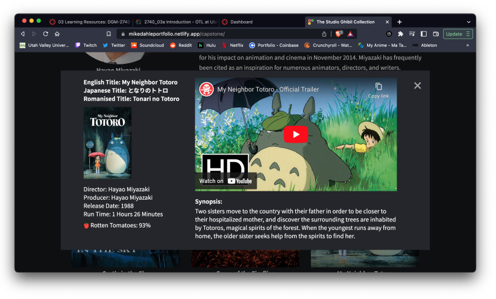

Delivering Movie Trailers of
Studio Ghibli Films Using Javascript
Mike Dahle
The Problem
Even though Studio Ghibli is a world renowned animation studio, how do you decide which film to watch? Not only that but is there somewhere you can go to for free and easily access all of the trailers and information you need? You can go websites like HBO Max and look at there catalougue, but that’s only if you have a subcription. Also, some of Studio Ghibli’s films are not as well known as the big name films like Totoro, Howl’s Moving Castle, or Spirited Away. This is the problem I wanted to solve. Create a website that people can access which compiles all the information on these movies in a clean user friendly interface.

The Process
I wanted to create an Interface that was similar to the one you get when you browse the Studio Ghibli collection on HBO Max. HBO Max has a lot of issues with other parts of their user interface, but this specific example shown above is what I was looking for when creating a simple and clean interface. After I had and idea of how I wanted the website to look I needed a way to display all the information easily using Javascript to cut down on the amount of code I would need to use. I was able to find a JSON file that conveniently contained most of the links and information that I needed for this project. I added it to my data folder, and after adding a few more points of data to it I was ready to pull from it using Javascript to populate my DOM.
Conclusion
The end result was very close to what I was looking to create when I first envisioned the design. By using Javascript I was easily able to pull all of the information and images that I needed to populate my webpage. This was great practice for manipulating DOM elements on a webpage. It also exemplifies the importance of being able to use Javascript functions to cut down on the amount of lines of code that you need to write. I was also able to learn how to implement a modal box that appears on top of the webpage and utilize that to display all of the information that I gathered using Javascript. This helped to keep everthing in one place so that the usere would not lose their way navigating my page.
